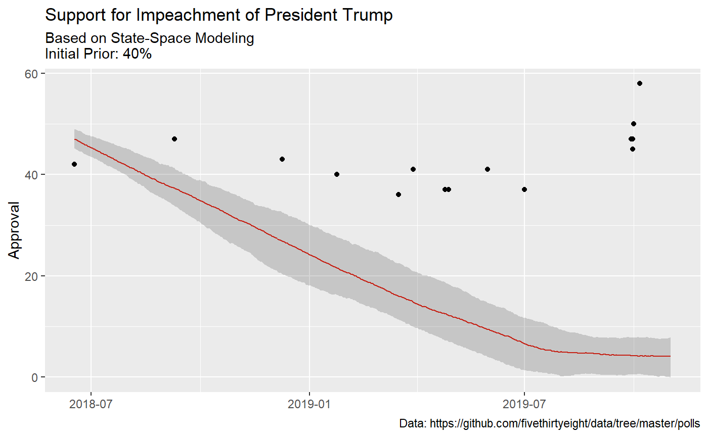

state-space.Rmdlibrary(tidyverse)
#> -- Attaching packages ------------------------------------------------------------------------------------------ tidyverse 1.3.0 --
#> <U+2713> ggplot2 3.2.1.9000 <U+2713> purrr 0.3.3
#> <U+2713> tibble 2.1.3 <U+2713> dplyr 0.8.3
#> <U+2713> tidyr 1.0.0 <U+2713> stringr 1.4.0
#> <U+2713> readr 1.3.1 <U+2713> forcats 0.4.0
#> -- Conflicts --------------------------------------------------------------------------------------------- tidyverse_conflicts() --
#> x dplyr::filter() masks stats::filter()
#> x dplyr::lag() masks stats::lag()
library(rstan)
#> Loading required package: StanHeaders
#> rstan (Version 2.19.2, GitRev: 2e1f913d3ca3)
#> For execution on a local, multicore CPU with excess RAM we recommend calling
#> options(mc.cores = parallel::detectCores()).
#> To avoid recompilation of unchanged Stan programs, we recommend calling
#> rstan_options(auto_write = TRUE)
#> For improved execution time, we recommend calling
#> Sys.setenv(LOCAL_CPPFLAGS = '-march=native')
#> although this causes Stan to throw an error on a few processors.
#>
#> Attaching package: 'rstan'
#> The following object is masked from 'package:tidyr':
#>
#> extract
library(stanmd)This is just a test. I am plagarizing myself from here
Raw data
dat <- read_csv("https://gist.githubusercontent.com/medewitt/74ad210ea8cd3e5870e44a8b3b2e7d64/raw/116273bc73830331bd6b8c1fdd9e48d5ccb8cc8d/impeachment.csv") %>%
select(-X6)
#> Warning: Missing column names filled in: 'X6' [6]
#> Parsed with column specification:
#> cols(
#> date = col_date(format = ""),
#> approve = col_double(),
#> n = col_double(),
#> moe = col_double(),
#> pollster = col_character(),
#> X6 = col_logical()
#> )A little formatting
library(lubridate)
#>
#> Attaching package: 'lubridate'
#> The following object is masked from 'package:base':
#>
#> date
dat_range <- crossing(seq(min(dat$date),
max(mdy("11/1/2019")),
"1 day") %>%
enframe(name = NULL) %>%
set_names("date_range"), pollster = unique(dat$pollster))
formatted_data <- dat %>%
mutate(my_end = date) %>%
select(my_end, approve, n, pollster) %>%
mutate(polling_var = sqrt(.5 * (1-.5)/n)*100) %>%
right_join(dat_range, by = c("my_end" = "date_range", "pollster"))
formatted_data[is.na(formatted_data)] <- -9
sigma <- formatted_data %>%
select(my_end, pollster, polling_var) %>%
pivot_wider(names_from = pollster,
values_from = polling_var,
values_fn = list(polling_var = max)) %>%
select(-my_end) %>%
as.matrix()
y <- formatted_data %>%
select(my_end, pollster, approve) %>%
pivot_wider(names_from = pollster,
values_from = approve,
values_fn = list(yes = max)) %>%
select(-my_end) %>%
as.matrix()fit <- stan_poll_pred(y = y, sigma = sigma, iter = 500, chains = 2)
#>
#> SAMPLING FOR MODEL 'stan_poll_pred' NOW (CHAIN 1).
#> Chain 1:
#> Chain 1: Gradient evaluation took 0 seconds
#> Chain 1: 1000 transitions using 10 leapfrog steps per transition would take 0 seconds.
#> Chain 1: Adjust your expectations accordingly!
#> Chain 1:
#> Chain 1:
#> Chain 1: Iteration: 1 / 500 [ 0%] (Warmup)
#> Chain 1: Iteration: 50 / 500 [ 10%] (Warmup)
#> Chain 1: Iteration: 100 / 500 [ 20%] (Warmup)
#> Chain 1: Iteration: 150 / 500 [ 30%] (Warmup)
#> Chain 1: Iteration: 200 / 500 [ 40%] (Warmup)
#> Chain 1: Iteration: 250 / 500 [ 50%] (Warmup)
#> Chain 1: Iteration: 251 / 500 [ 50%] (Sampling)
#> Chain 1: Iteration: 300 / 500 [ 60%] (Sampling)
#> Chain 1: Iteration: 350 / 500 [ 70%] (Sampling)
#> Chain 1: Iteration: 400 / 500 [ 80%] (Sampling)
#> Chain 1: Iteration: 450 / 500 [ 90%] (Sampling)
#> Chain 1: Iteration: 500 / 500 [100%] (Sampling)
#> Chain 1:
#> Chain 1: Elapsed Time: 5.794 seconds (Warm-up)
#> Chain 1: 7.207 seconds (Sampling)
#> Chain 1: 13.001 seconds (Total)
#> Chain 1:
#>
#> SAMPLING FOR MODEL 'stan_poll_pred' NOW (CHAIN 2).
#> Chain 2:
#> Chain 2: Gradient evaluation took 0 seconds
#> Chain 2: 1000 transitions using 10 leapfrog steps per transition would take 0 seconds.
#> Chain 2: Adjust your expectations accordingly!
#> Chain 2:
#> Chain 2:
#> Chain 2: Iteration: 1 / 500 [ 0%] (Warmup)
#> Chain 2: Iteration: 50 / 500 [ 10%] (Warmup)
#> Chain 2: Iteration: 100 / 500 [ 20%] (Warmup)
#> Chain 2: Iteration: 150 / 500 [ 30%] (Warmup)
#> Chain 2: Iteration: 200 / 500 [ 40%] (Warmup)
#> Chain 2: Iteration: 250 / 500 [ 50%] (Warmup)
#> Chain 2: Iteration: 251 / 500 [ 50%] (Sampling)
#> Chain 2: Iteration: 300 / 500 [ 60%] (Sampling)
#> Chain 2: Iteration: 350 / 500 [ 70%] (Sampling)
#> Chain 2: Iteration: 400 / 500 [ 80%] (Sampling)
#> Chain 2: Iteration: 450 / 500 [ 90%] (Sampling)
#> Chain 2: Iteration: 500 / 500 [100%] (Sampling)
#> Chain 2:
#> Chain 2: Elapsed Time: 5.126 seconds (Warm-up)
#> Chain 2: 3.694 seconds (Sampling)
#> Chain 2: 8.82 seconds (Total)
#> Chain 2:
#> Warning: The largest R-hat is 1.92, indicating chains have not mixed.
#> Running the chains for more iterations may help. See
#> http://mc-stan.org/misc/warnings.html#r-hat
#> Warning: Bulk Effective Samples Size (ESS) is too low, indicating posterior means and medians may be unreliable.
#> Running the chains for more iterations may help. See
#> http://mc-stan.org/misc/warnings.html#bulk-ess
#> Warning: Tail Effective Samples Size (ESS) is too low, indicating posterior variances and tail quantiles may be unreliable.
#> Running the chains for more iterations may help. See
#> http://mc-stan.org/misc/warnings.html#tail-essObviously this is a terrible fit. I just wanted something to run for testing purposes.
mu_trump <- extract(fit, pars = "mu", permuted = T)[[1]] %>%
as.data.frame
names(mu_trump) <- unique(dat_range$date_range)
mu_ts_trump <- mu_trump %>% reshape2::melt() %>%
mutate(date = as.Date(variable)) %>%
group_by(date) %>%
summarise(median = median(value),
lower = quantile(value, 0.025),
upper = quantile(value, 0.975),
candidate = "Trump")
#> No id variables; using all as measure variablesAnd now we can plot!
mu_ts_trump %>%
ggplot(aes(date, median))+
geom_line(color = "#E91D0E")+
geom_ribbon(aes(ymin = lower, ymax = upper), alpha = .2)+
labs(
title = "Support for Impeachment of President Trump",
subtitle = "Based on State-Space Modeling\nInitial Prior: 40%",
caption = "Data: https://github.com/fivethirtyeight/data/tree/master/polls",
y = "Approval",
x = NULL
)+
geom_vline(xintercept = as.Date(Sys.Date()), color = "orange")+
geom_point(data = dat, (aes(date, approve)))